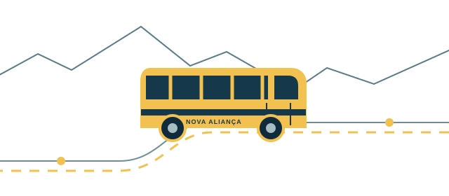

A identidade da nossa operação.
Frota, equipe e jornada da Nova Aliança Transportes. Mogi das Cruzes, São Paulo. Responsável: Agenilto.
Cada caminho começa com cuidado.
Gente, veículos e compromissos. O dia a dia da nossa equipe, no mesmo lugar.

Cores da marca
Azul profundo
#15384B
#15384B
Amarelo escolar
#F2C14F
#F2C14F
Branco quente
#FFFDF6
#FFFDF6
O amarelo identifica a marca; os estados dos veículos continuam acompanhados de texto: Em dia, Atenção e Urgente.
Uma rota em comum
O monograma NA combina o nome da empresa com uma linha de percurso e seu ponto de destino. O símbolo e a ilustração são originais, criados para este app. Não são uma reprodução de um logotipo oficial já existente.